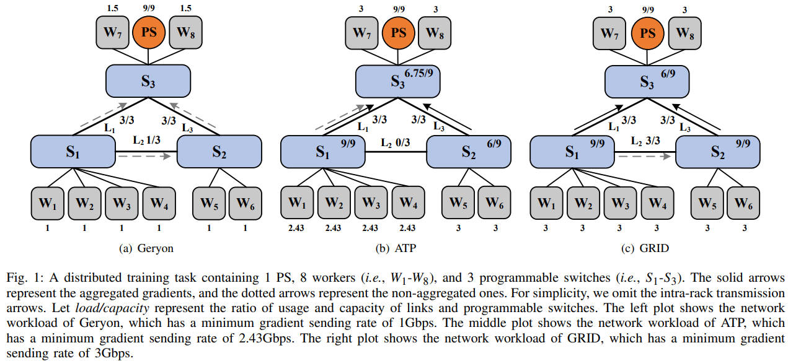

Submitted to JSAC (2022.4.17).
JSAC: (Rejected) Scores 4 4 4 6 3 3.
Accepted by ToN (2023.2.9)
A deep neural network (DNN) model consists of multiple network layers, each of which contains a large number of parameters. Training a DNN model requires hundreds of iterations over the dataset to achieve convergence.
As the scale of DNN model training increases, single machine can not satisfy the computation and storage demands.
Some propose distributed training, which splits one DNN model training task into several sub-tasks each of which is assigned to a machine (i.e., worker), to speed up the model training (distributed training, DT).
In terms of the parallelism schemes, the distributed training can be categorized into two main types: model parallelism and data parallelism. This paper focuses on the data parallelism distributed training, which splits the whole dataset into multiple compute nodes. In each iteration, each compute node independently trains the model on its partition of the dataset to generate the gradient. Subsequently, compute nodes communicate with other nodes to update the global model parameters (i.e., gradient aggregation).
Parameter Server (PS) is a widely-adopted gradient aggregation scheme. In PS, there are two kinds of compute nodes: workers and parameter servers. Workers generate and push gradients to parameter servers. Afterward, parameter servers aggregate all the gradients and update the model parameters. At last, workers pull the updated results from parameter servers for the next training iteration.
But what is the price of DT?
Recent studies have shown that the bottleneck in distributed model training is shifting from computing to communication. According to work1, for a DT task training DeepLight on 100Gbps links, $79\%$ of the training time is occupied for communication.
One intuitive way is to reduce the size of forwarded gradients. Some works reduce the gradient size by gradient compression. But here we introduce another way called in-network aggregation, which utilizes programmable switches to mitigate the communication bottlenack.
The idea of in-network aggregation begins at wireless networks and now attracts researchers to adopt in-network aggregation in datacenters.
Specifically, in-network aggregation offloads part of gradients aggregated in the latest programmable switches to reduce the amount of transferred data, alleviating the communication bottleneck.
Let’s take a look at an example.

Consider a distributed training task containing 1 PS and 8 workers. Each link has a bandwidth of 3Gbps. We set the ingress bandwidth of the PS to 9Gbps. The processing capacity of programmable switches is 9Gbps.
Since the PS needs to wait for gradients of all workers to perform global aggregation, we take the minimum gradient sending rate as the critical metric. We use load/capacity to denote the ratio of workload and capacity for programmable switches and links. The solid arrows represent the aggregated gradients, and the dotted arrows represent the non-aggregated gradients sent by workers.
We first consider Scheme 1, which does not utilize in-network aggregation. In this case, Scheme 1 schedules the gradient of $W_4$ through the path $W_4$->$S_1$->$S_2$->$S_3$->$PS$ to avoid congestion in link $L_1$. Accrodingly, the gradients of workers $W_1$-$W_3$ are scheduled through the paths $W_1$->$S_1$->$S_3$->$PS$, $W_2$->$S_1$->$S_3$->$PS$ and $W_3$->$S_1$->$S_3$->$PS$, respectively.
Due to bandwidth constraints of links $L_1$ and $L_3$, workers $W_1$-$W_6$ will send the gradients with the minimum gradient sending rate of 1Gbps.
We then consider Scheme 2, a state-of-the-art method with in-network aggregation. In Scheme 2, Each worker chooses the nearest programmable switches for in-network aggregation. If the processing capacity of the programmable switch is exhausted, it will directly transfer the gradients to the PS. In this case, since the processing capacity of $S_1$ is 9Gbps, $W_1$-$W_4$ can send gradients with the speed of 9/4=2.25Gbps. Moreover, $W_1$-$W_4$ can send gradients with the additional speed of 0.75/4=0.18Gbps to the PS, since link $L_1$ still has 3-2.25=0.75Gbps available bandwidth. These gradients will be aggregated by $S_3$ with available processing capacity. As a result, the minimum gradient sending rate is 2.43Gbps.
What if we combine Scheme 1 and 2?
Scheme 2 has the following shortcomes:
To address this two shortcomes, we present GRID, which performs gradient routing with in-network aggregation. The challeges of determining gradient routing are
If you want to know how we address these challeges, please see here.
https://www.usenix.org/conference/nsdi21/presentation/sapio
Distributed Training, In-network Aggregation, Programmable Network — Aug 25, 2022